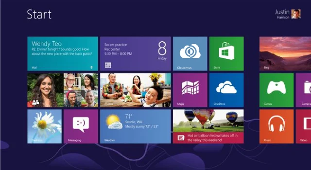

История следующего проекта
- 2015Electron и музыка во вкладке браузера задолбали. Хочу хоткеи и трей. Придумал название и иконку
- ИдеяQt + WebView: все сервисы в одном окне, управление через внедрённый JavaScript. С Юрой Самойленко пытались сделать прототип
- MellowPlayerнашёлся, делал ровно это и так же. В 2020 загнулся
- Июль 2026по приколу за полчаса навайбкодил консольную Яндекс Музыку на Python, вспомнил CloudMus — и понеслось
